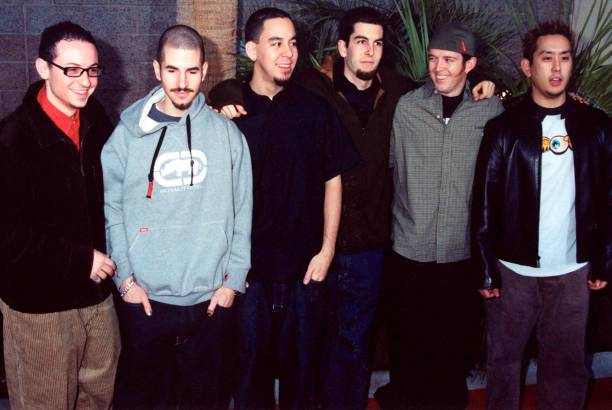

Discografía
Hybrid Theory
2000
- Papercut
- One Step Closer
- With You
- Points of Authority
- Crawling
- Runaway
- By Myself
- In the End
- A Place for My Head
- Forgotten
- Cure for the Itch
- Pushing Me Away

Meteora
2003
- Foreword
- Don't Stay
- Somewhere I Belong
- Lying from You
- Hit the Floor
- Easier ti Run
- Faint
- Figure.09
- Breaking The Habit
- From the Inside
- Nobody's Listening
- Session
- Numb

Minutes to Midnight
2007
- Wake
- Given Up
- Leave Out All The Rest
- Bleed It Out
- Shadow of the Day
- What I've Done
- Hands Held High
- No More Sorrow
- Valentine's Day
- In Between
- In Pieces
- The Little Things Give You Away

A Thousand Suns
2010
- The Requiem
- The Radiance
- Burning in the Skies
- Empty Spaces
- When They Come for Me
- Robot Boy
- Journey Of The Dead Man
- Waiting for the End
- Blackout
- Wretches and Kings
- Wisdom, Justice, and Love
- Iridescent
- Fallout
- The Catalyst
- The Messenger

Living Things
2012
- LOST IN THE ECHO
- IN MY REMAINS
- BURN IT DOWN
- LIES GREED MISERY
- I'LL BE GONE
- CASTLE OF GLASS
- VICTIMIZED
- ROADS UNTRAVELED
- SKIN TO BONE
- UNTIL IT BREAKS
- TINFOIL
- POWERLESS

The Hunting Party
2014
- Keys to the Kingdom
- All for Nothing (feat. Page Hamilton)
- Guilty All the Same (feat. Rakim)
- The Summoning
- War
- Wastelands
- Until It's Gone
- Rebellion (feat. Daron Malakian)
- Mark the Graves
- Drawbar (feat. Tom Morello)
- Final Masquerade
- A Line in the Sand
One More Light
2017
- Nobody Can Save Me
- Good Goodbye (feat. Pusha T and Stormzy)
- Talking to Myself
- Battle Symphony
- Invisible
- Heavy (feat. Kiiara)
- Sorry for Now
- Halfway Right
- One More Light
- Sharp Edges
Galería
